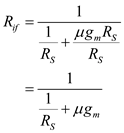

Step 1:
(a)
Refer to Figure P10.66 (a) for the feedback current amplifier circuit. In this, the super common gate transistor is connected between the gate and source terminals of the MOSFET.
Replace the op-amp with its equivalent model and replace the MOSFET with its small signal equivalent model.
For ideal op-amp, the input resistance is very high (infinite) which is in the order of mega ohms (the resistor  is open). And the drain current
is open). And the drain current  is approximately equal to the source current. That is
is approximately equal to the source current. That is
The closed loop gain the op-amp is,
The closed loop gain is increase when the open loop gain  is large. Therefore, from Figure 1, clearly observe that the input voltage is,
is large. Therefore, from Figure 1, clearly observe that the input voltage is,
Therefore, the signal voltage at the input terminal is .
Step 2:
Since the drain current  is approximately equal to the source current. And the current flowing through the resistor
is approximately equal to the source current. And the current flowing through the resistor  is
is  since there is no current flowing through the negative terminal of the op-amp. Therefore, it is concluded that the output current is flowing through the source resistance,
since there is no current flowing through the negative terminal of the op-amp. Therefore, it is concluded that the output current is flowing through the source resistance,  . That is,
. That is,
Therefore, the current gain  is .
is .
Clearly observe that the input resistance is .
Therefore, the input resistance  is .
is .
Step 3:
(b)
For finite value of  and the input resistance of the ideal op-amp is very high (infinite).
and the input resistance of the ideal op-amp is very high (infinite).
The open loop amplifier circuit (A circuit) is shown in Figure 1.
Figure 1
Step 4:
For ideal op-amp the output resistance is very small. So, neglect the resistance,  .
.
From Figure 1, the voltage is,
The source current  through the resistor is,
through the resistor is,
The expression for current gain  is,
is,
Here,
Source resistance is 
Trans-conductance 
Therefore, the gain  is .
is .
Step 5:
From Figure 1, clearly the total input resistance is,

Therefore, the input resistance  is
is
The output resistance is,
Therefore, the out resistance  is .
is .
Step 6:
(c)
The closed loop gain of the op-amp is,
Substitute 1 for .
Therefore, the value of  is
is  .
.
Step 7:
(d)
Substitute  for
for  and 1 for
and 1 for  to derive the expression for
to derive the expression for  .
.
Therefore, the expression for  is .
is .
The closed loop gain the op-amp is,
Substitute  for
for  and 1 for
and 1 for  to obtain
to obtain  .
.
If  is large, then
is large, then  . That is,
. That is,
Therefore, the value of the feedback gain  is
is  .
.
Step 8:
(e)
Refer to Figure 10.28 in the text book for the shunt series feedback amplifier and its equivalent circuit.
The input resistance  found from the feedback amplifier is,
found from the feedback amplifier is,
Here,
The input resistance, 
, which are current gains, are current gains.
Substitute  for
for  and
and  for
for  .
.
Divide right side expression with  .
.

Step 9:
This expression can also be written as,
Here,
Since the loop gain  is large, then inverse of
is large, then inverse of  is very less (approximately zero). Therefore,
is very less (approximately zero). Therefore,
Therefore, the input resistance  is very less.
is very less.
The output resistance  found from the feedback amplifier is,
found from the feedback amplifier is,
Substitute for  and for
and for  .
.
Here, there is no load resistance. Therefore,
Since the loop gain  is large, and then the output resistance is,
is large, and then the output resistance is,
Therefore, the output resistance  is very large.
is very large.
Step 10:
(f)
Refer to Figure P10.66 (b) for the cascode configuration in which the super CG transistor is used.
The small signal equivalent circuit is shown in Figure 2.
Figure 2
Step 11:
From Figure 2, clearly observe that the current  is,
is,
The voltage  is applied to the gate terminal of the transistor
is applied to the gate terminal of the transistor  . Therefore, the gate source voltage becomes
. Therefore, the gate source voltage becomes  . That is,
. That is,
Therefore,
The closed loop gain of the op-amp is,
Substitute for  and 1 for
and 1 for  .
.
Since , then,

Therefore, the expression for output current  is .
is .
Step 12:
The output amplifier is,
Substitute  for .
for .
Therefore, the expression for output resistance is .